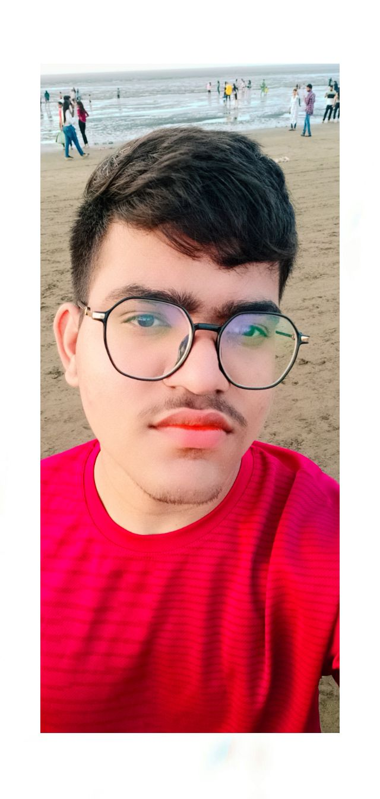

My name is Hasib Lakdawala, and I am from Surat.
There are three members in my family, including myself, and I have one elder sister.
I completed my 10th standard from Alfesanee School in 2020 and my 12th standard from M.M.P. High School in 2022. I am a BCA graduate from Z.S. Patel College, affiliated with VNSGU.
Currently, I am pursuing a Full Stack Python Development course from Tops Technology.
My strengths are that I am a quick learner, self-motivated, and have good problem-solving skills. I also have good time management skills and enjoy learning new technologies.
Talking about my weakness, I sometimes take a little extra time to solve a problem because I want to find the best solution. I am working on improving my speed and managing my time better. I also get nervous while speaking in front of a large audience, and I am actively improving my public speaking skills.
My current goal is to learn industry-relevant skills and start my career in an IT company to gain practical experience. After five years, I see myself in a higher position with strong technical expertise, and I would also like to explore freelancing opportunities in the future.
